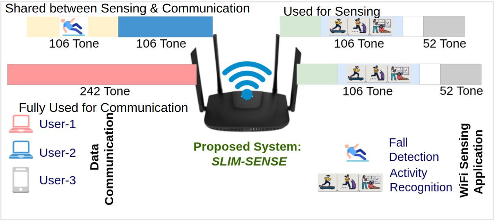
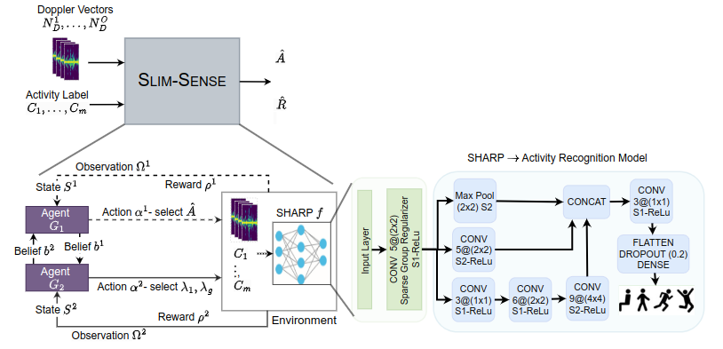

Resources
Abstract
With the growing use cases of CSI-based WiFi sensing, future WiFi networks are moving towards integrating sensing andcommunication (ISAC) by sharing the same frequency resources between data communication and WiFi sensing. However,it is known that WiFi sensing is detrimental to WiFi communication due to its expensive use of frequency resources forcollecting CSI samples, limiting its effectiveness in ISAC. To address this challenge, we propose Slim-Sense, anovel approachto resource saving while maximizing the sensing accuracy. We first demonstrate that it is possible to perform accurateWiFi sensing without using the entire bandwidth. In fact, we can obtain close to maximum accuracy while utilizing only24.42% of the bandwidth and 25% of the antennas. Obtaining such accuracy at low bandwidth requires the selection ofthe antennas and bandwidth that are most relevant for sensing activities. One of Slim-Sense’s highlights is using a novelapproach consisting of a Sparse Group Regularizer (SGR) and Hierarchical Reinforcement learning (HRL) technique to selectthe minimum optimal bandwidth resources for sensing while maximizing sensing accuracy. Considering the stochastic natureof the sensing environment and the difference in requirements of different sensing applications, Slim-Sense provides anenvironment and application-specific bandwidth resources for sensing. We evaluate Slim-Sense with four different WiFi CSIdatasets, each varying in sensing environment and application, including one we collected in 46 different environmentalsettings. The experimental evaluation shows that Slim-Sense saves up to 92.9% resources while incurring < 5% reductionin sensing accuracy compared to using entire spectrum resources. We show that Slim-Sense is generalized to differentenvironments and sensing models. Compared to the state-of-art solution, Slim-Sense outperforms and achieves a maximumimprovement of 28.75% in resource-saving and 42.18% in sensing accuracy.
Publications
Overview

Architecture

Citation
@article{10.1145/3712271,
author = {Singh, Vijay Kumar and Walecha, Aryan and Gera, Ashutosh and Jay, Rishabh and Bhattacharya, Arani and Maity, Mukulika},
title = {Slim-Sense: A Resource Efficient WiFi Sensing Framework towards Integrated Sensing and Communication},
year = {2025},
issue_date = {March 2025},
publisher = {Association for Computing Machinery},
address = {New York, NY, USA},
volume = {9},
number = {1},
url = {https://doi.org/10.1145/3712271},
doi = {10.1145/3712271},
journal = {Proc. ACM Interact. Mob. Wearable Ubiquitous Technol.},
month = mar,
articleno = {17},
numpages = {33}
}